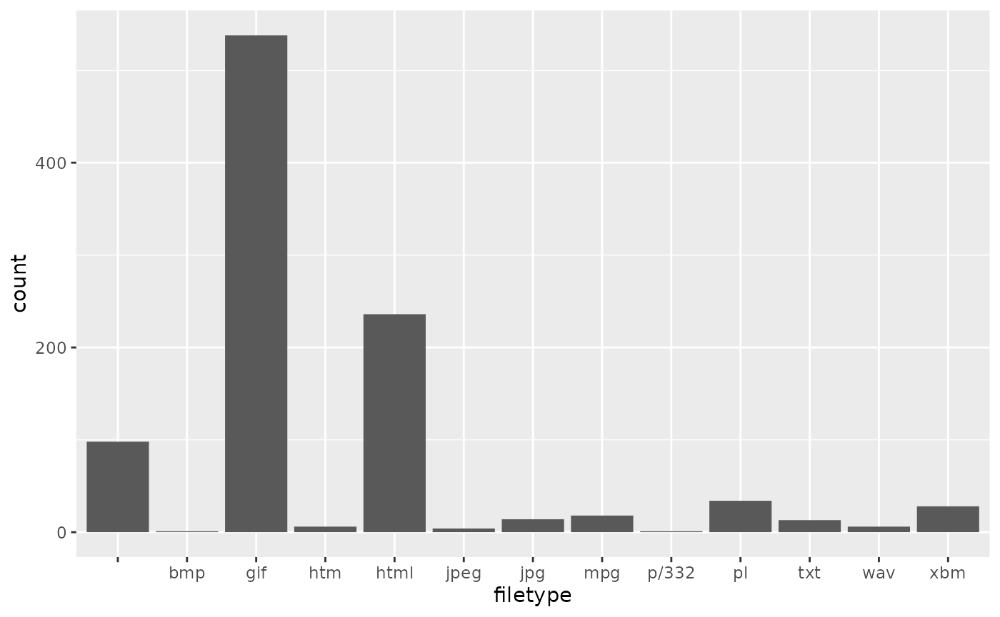
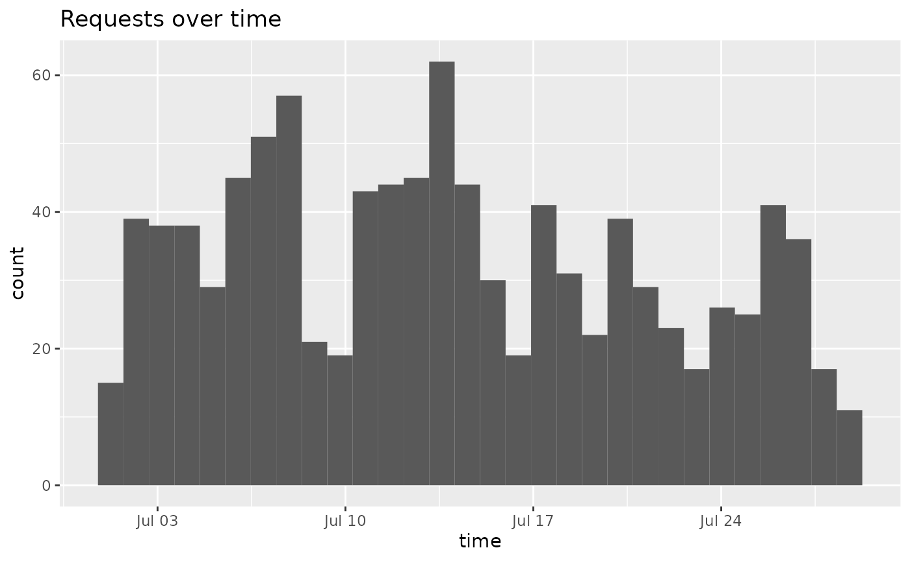

Parsing server log files is a common task in server administration. 1,2 Historically R would not be well suited to this and it would be better performed using a scripting language such as perl. Rex, however, makes this easy to do and allows you to perform both the data cleaning and analysis in R!
Common server logs consist of space separated fields.
198.214.42.14 - - [21/Jul/1995:14:31:46 -0400] “GET /images/ HTTP/1.0” 200 17688
lahal.ksc.nasa.gov - - [24/Jul/1995:12:42:40 -0400] “GET /images/USA-logosmall.gif HTTP/1.0” 200 234
The logs used in this vignette come from two months of all HTTP requests to the NASA Kennedy Space Center WWW server in Florida and are freely available for use. 3
parsed <- scan("NASA.txt", what = "character", sep = "\n") %>%
re_matches(
rex(
# Get the time of the request
"[",
capture(name = "time",
except_any_of("]")
),
"]",
space, double_quote, "GET", space,
# Get the filetype of the request if requesting a file
maybe(
non_spaces, ".",
capture(name = "filetype",
except_some_of(space, ".", "?", double_quote)
)
)
)
) %>%
mutate(filetype = tolower(filetype),
time = as.POSIXct(time, format="%d/%b/%Y:%H:%M:%S %z"))This gives us a nicely formatted data frame of the time and filetypes of the requests.
| time | filetype |
|---|---|
| 1995-07-21 18:31:46 | |
| 1995-07-24 16:42:40 | gif |
| 1995-07-02 06:30:34 | gif |
| 1995-07-05 17:51:39 | |
| 1995-07-11 03:11:49 | gif |
| 1995-07-15 15:27:49 | mpg |
| 1995-07-13 15:02:50 | xbm |
| 1995-07-23 13:11:06 | |
| 1995-07-14 14:38:04 | gif |
| 1995-07-25 13:33:01 | gif |
We can also easily generate a histogram of the filetypes, or a plot of requests over time.
ggplot(na.omit(parsed)) + stat_count(aes(x=filetype))
ggplot(na.omit(parsed)) + geom_histogram(aes(x=time)) + ggtitle("Requests over time")